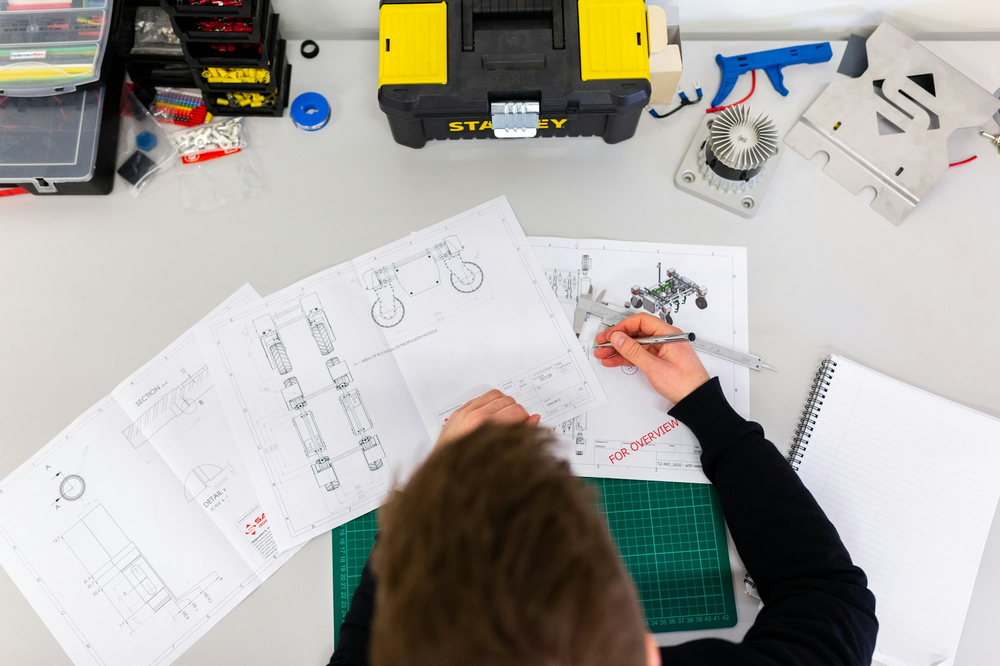

Know your ground
before you build on it.
The smartest money you'll spend on any project.
A soil test costs a fraction of 1% of construction cost — yet it decides the safety of everything above. Our geotechnical team drills, samples and lab-tests your plot to report exact bearing capacity, water table and soil type.
The result: your foundation is designed for real conditions, saving lakhs in over-designed footings — or preventing catastrophic failures.
Testing & reporting
Standard Penetration Test (SPT)
Field testing at multiple depths with N-values recorded per standard geotechnical practice.
Bearing Capacity Report
Safe allowable bearing pressure at foundation level — the number your structural engineer needs.
Lab Analysis
Sieve, Atterberg limits, moisture, density and shear tests on recovered samples.
Water Table Mapping
Seasonal ground-water depth measurement — critical for basements and foundation design.
Foundation Recommendation
Plain guidance: shallow footing, raft or pile — what suits your soil and structure best.
Society-Compliant Reports
Reports formatted for CDA and society submission requirements, stamped and signed.
Our equipment on your plot



Soil testing questions, answered.
Soil strength varies street by street, even plot by plot. Testing tells you the safe bearing capacity so your foundation is neither dangerously weak nor wastefully expensive. Society offices increasingly require an approved soil report before map approval.
Field work on a standard residential plot takes one day. The complete geotechnical report with lab results and bearing capacity recommendation is delivered within 3 working days — 24 hours for urgent projects.
Standard residential testing (up to 20 ft depth, SPT + lab) starts around PKR 35,000–60,000 depending on location and depth required. Deeper commercial investigations are quoted per metre. Call for a same-day rate.
Yes. Our reports are signed by qualified geotechnical engineers and formatted to CDA / society requirements — accepted across Islamabad societies including D-17, D-18, B-17, Wapda Town and Faisal Hills.
Weak soil isn't a dead end — it's information. We recommend solutions like wider footings, soil replacement, raft foundations or piling, scaled to your budget. Knowing early costs far less than discovering it after cracks appear.
Building soon? Test the ground first.
Same-week mobilisation across Islamabad with lab reports in as little as 72 hours — book your soil test today.
Book a Test